Business Object Detail Views¶
Ticket Detail View¶
Sidebar¶
Sidebar
Ticket Detail View Widgets¶
- Communication Compact Widget
This widget shows all articles of the ticket in a table.
This widget supports Widget Filter and Widget Configuration.
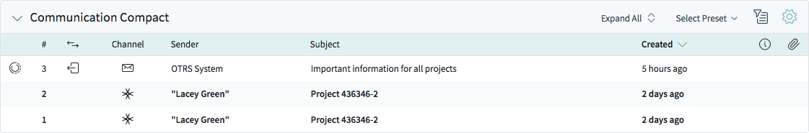Communication Compact Widget
Articles in the communication of a ticket can come from different channels. The column Channel informs about the channel of the according article. The column with the arrows on both sides informs about the direction of the article. Possible values are here:
- Incomming
- Outgoing
- System
The column with the information symbol shows additional article information e.g. if the article is marked as important.
Clicking an article in the table expands the article. Clicking the Expand all button at the top of the widget expands all articles.
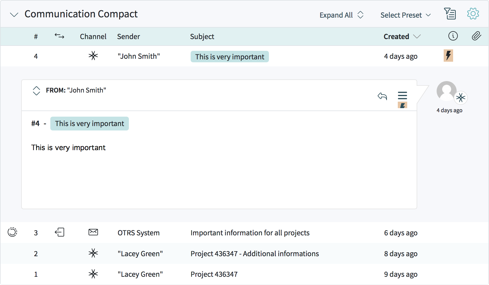Communication Compact Widget Expanded Article
The icons at the article in the expanded view allow actions like reply or forward. The article menu symbol opens further actions e.g. printing the article or splitting the article.
- Communication Stream Widget
This widget shows the articles of a ticket in a different form than in the widget Communication Compact. The articles are displayed as symbolic speech bubbles next to the authors’ avatars with the topic and the abbreviated content of the article.
This widget supports Widget Filter and Widget Configuration.
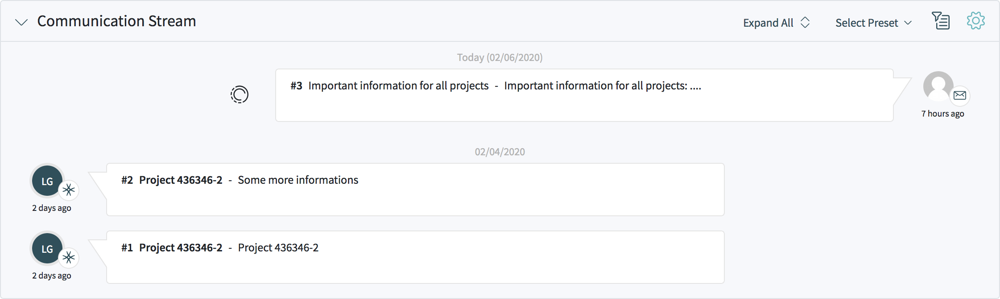Communication Stream Widget
The article direction is represented by the avatars of each side. The left side avatars represent the incomming articles. The avatars at the right side represent the outgoing articles. The symbols near the avatars represent the channel of the article.
Clicking an article expands the article. The icons at the article in the expanded view allow actions like reply or forward. The article menu symbol opens further actions e.g. printing the article or splitting the article.
- Properties Widget
This widget shows the properties of the ticket. The properties are presented as small cards within the widget.
This widget supports Widget Configuration.
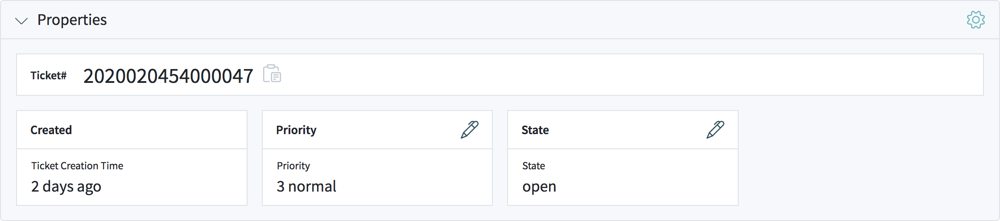Properties Widget
Most of the cards have a pen symbol in the right corner. Clicking this symbol allows to directly edit the property.
- Linked Tickets Widget
This widget shows linked tickets presented in a list.
This widget supports Widget Filter and Widget Configuration.
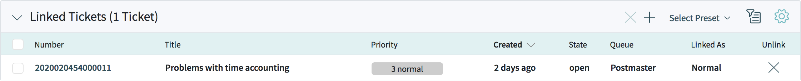Linked Tickets Widget
The Unlink column allows to directly unlink a ticket.
- Customer Information Widget
This widget shows information about customer and customer users presented in cards.
This widget supports Widget Configuration.

Customer Information Widget
The customer card shows the number of open and closed tickets of the customer. The Action section contains icons to directly edit the customer. The section Social contains links to the social channels of the customer.
The customer user card shows the number of open and closed tickets of the customer user. The Create section contains icons to directly create a new customer user. The Action section contains icons to directly edit the customer user and to login as customer user. The section Social contains links to the social channels of the customer user.
- Attachments Widget
- TODO
- Linked Knowledge Base Articles Widget
This widget shows linked knowledge base articles.
This widget supports Widget Filter and Widget Configuration.

Linked Knowledge Base Articles Widget
The Unlink column allows to directly unlink a ticket.
- Drafts
This widget shows all defined drafts in a list. Clicking on an item in the list opens the according draft.
This widget supports Widget Configuration.
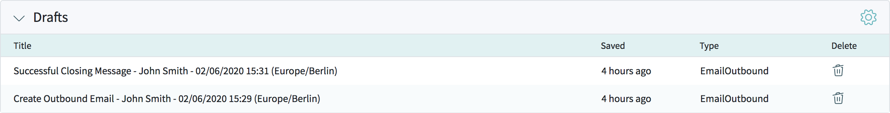Drafts Widget
The Delete column allows to directly delete a draft.
Ticket Detail View Actions¶
- Note
This ticket action allows to create a note for ticket. Notes are by default only shown to agents. The note is added as article to the ticket.
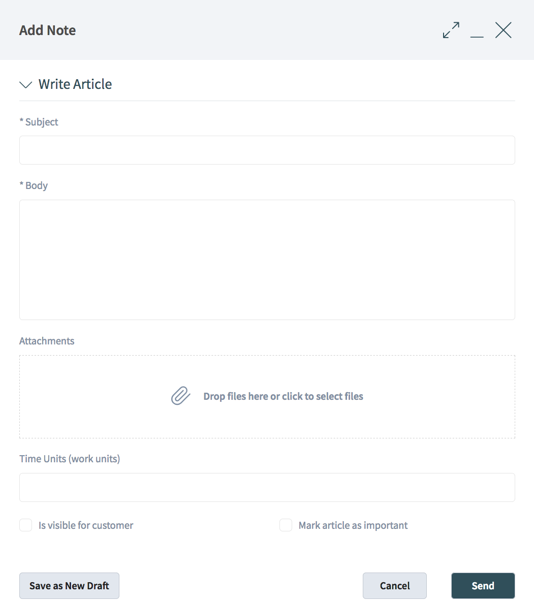Ticket Action Note
If the checkbox Is visible for customer is checked the note will be visible for customers in the external interface.
The fields Subject and Body are mandatory. The field Attachments allows to add attachments to the note. The field Time Units can be used to input times.
If the checkbox Mark as important is checked the note will be marked as important. The note will be shown in the Communication Compact widget with a special icon showing that this article is important.
- Phone Call Outbound
This ticket action allows to add a note to the ticket based on an outgoing phone call.
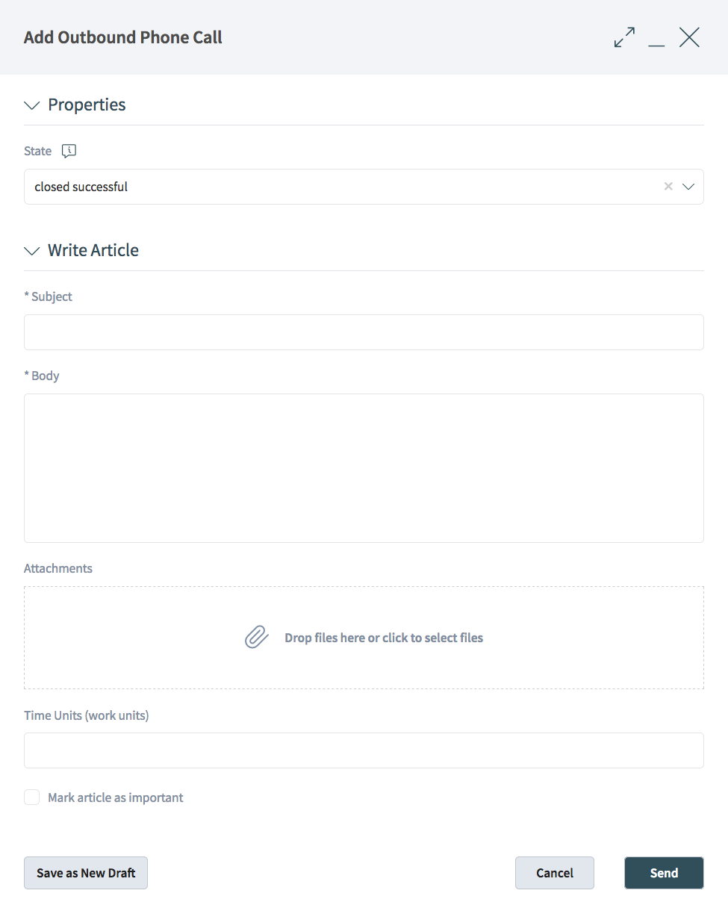Ticket Action Phone Outbound
- Phone Call Inbound
This ticket action allows to add a note to the ticket based on an incoming phone call.
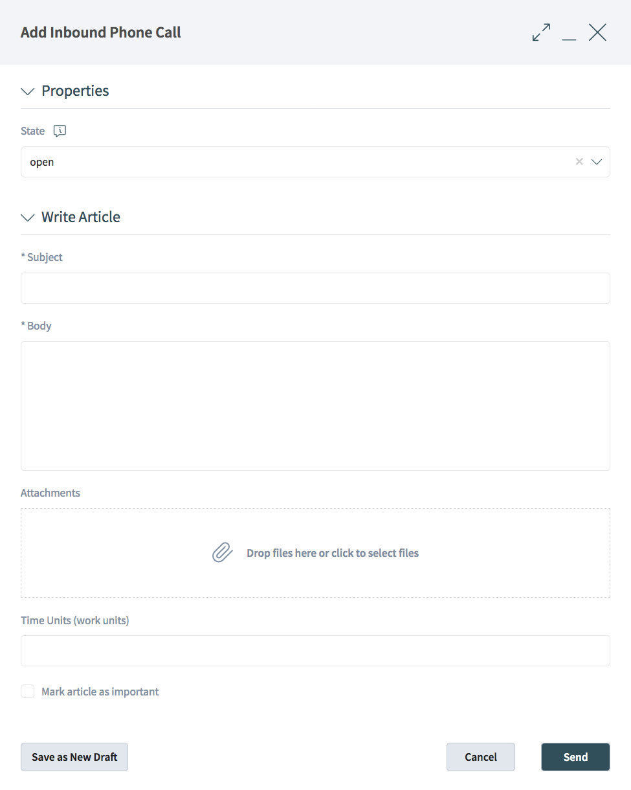Ticket Action Phone Inbound
- E-Mail Outbound
This ticket action allows to send an email and add the email as article to the ticket.
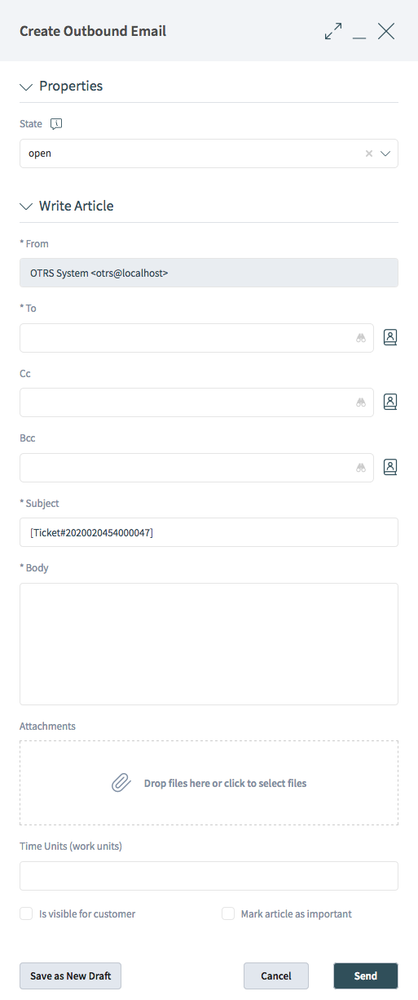Ticket Action E-mail Outbound
- SMS Outbound
- This ticket action allows to send an SMS and add the SMS as article to the ticket.
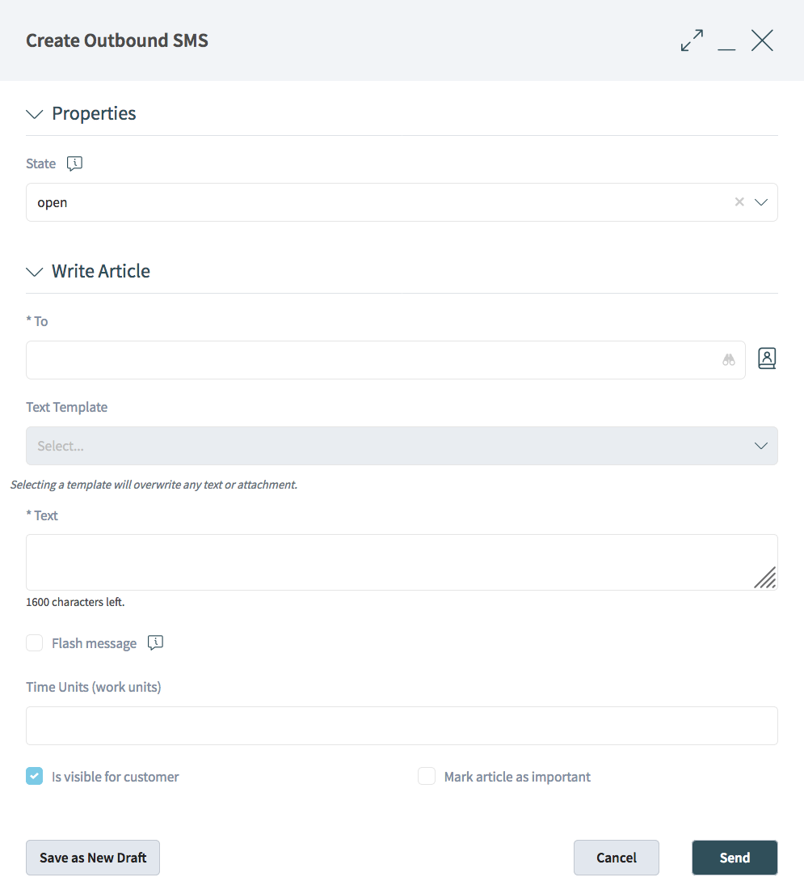Ticket Action SMS Outbound
- Free Fields
This ticket action allows to change the free field values of the ticket.
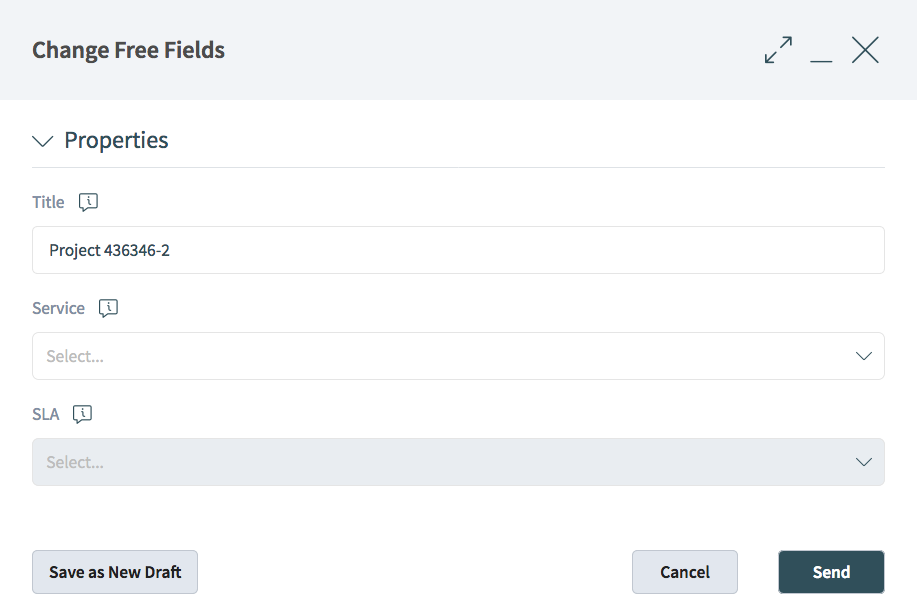Ticket Action Free Fields
- This ticket action allows to print the ticket.
- Close
This ticket action allows to close the ticket.
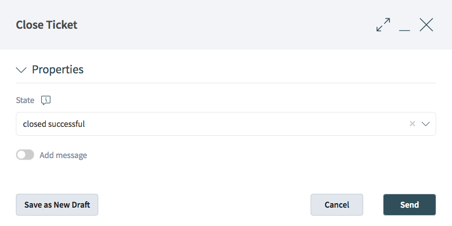Ticket Action Close
- Link
This ticket action allows to link the ticket with other tickets or knowledge base articles.
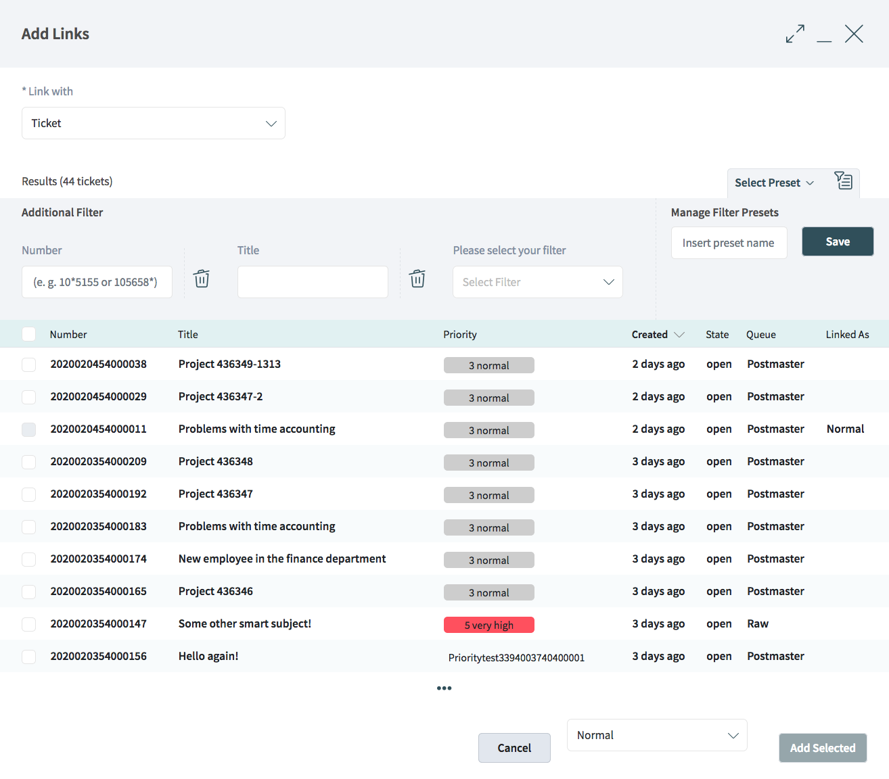Ticket Action Link
The filter sections allows to filter for tickets or knowledge base articles. For tickets the filters Number and Title are set as default filter fields. For knowledge base articles the filters Category and Knowledge base article number are set as default filters.
This section has the same function as the filter sections for business object list and allows defining more filters and save these as filter presets.
The objects can be linked as Normal , Child or Parent.
- Pending
This ticket action allows to set a pending reminder or a pending auto close for the ticket.
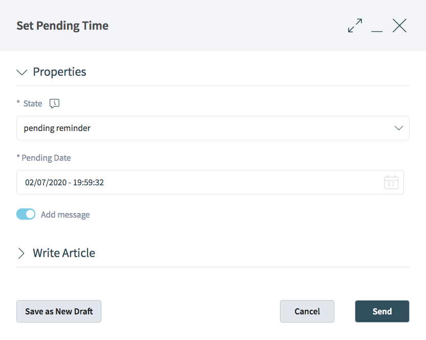Ticket Action Pending
- Priority
This ticket action allows to change the priority of the ticket.
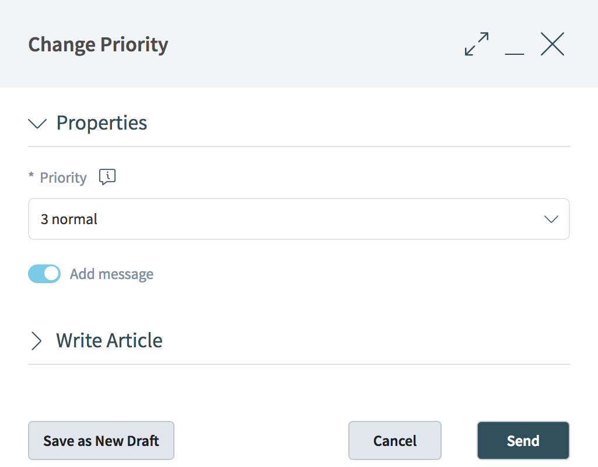Ticket Action Priority
- Owner
This ticket action allows to change the owner of the ticket.
Ticket Action Owner
- History
This ticket action allows to view the history of the ticket.
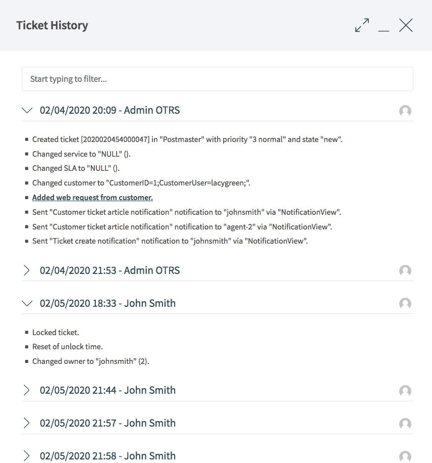Ticket Action History
Article Actions¶
- Reply
This article action allows to reply to the article. If the checkbox Is visible for customer is checked the article will be visible for customers in the external interface.
The fields Subject and Body are mandatory. The field Attachments allows to add attachments to the note. The field Time Units can be used to input times.
If the checkbox Mark as important is checked the note will be marked as important.
- Reply all
This article action allows to reply all recipients to the article. If the checkbox Is visible for customer is checked the article will be visible for customers in the external interface.
The fields Subject and Body are mandatory. The field Attachments allows to add attachments to the note. The field Time Units can be used to input times.
If the checkbox Mark as important is checked the note will be marked as important.
- Reply via SMS
This article action allows to reply to the article as SMS message. If the checkbox Is visible for customer is checked the article will be visible for customers in the external interface.
The fields Subject and Body are mandatory. The field Attachments allows to add attachments to the note. The field Time Units can be used to input times.
The checkbox Flash message can be used to display the sms directly and without user interaction. (depends on the used device and provider)
If the checkbox Mark as important is checked the note will be marked as important.
- Forward
This article action allows to forward the article as email. If the checkbox Is visible for customer is checked the article will be visible for customers in the external interface.
The fields Subject and Body are mandatory. The field Attachments allows to add attachments to the note. The field Time Units can be used to input times.
If the checkbox Mark as important is checked the note will be marked as important.
- Redirect
This article action allows to redirect the article as email. The checkbox Inform original sender is checked by default.
The fields Subject and Body are mandatory.
- Mark as Important
- This article action marks the article as important. Articles marked as important are highlighted in the article overviews.
- Split
This article action allows to split the article to an other ticket. Possible link type are:
- Parent
- Child
- Normal
- This article action allows to print the article.
Knowledge Base Article Detail View¶
Knowledge Base Article Detail View Widgets¶
- Symptom (public) Widget
This widget can be used to describe the symptom of a problem.
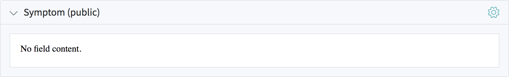Symptom Widget
This widget supports Widget Configuration.
- Problem (public) Widget
This widget can be used to describe the problem itself.
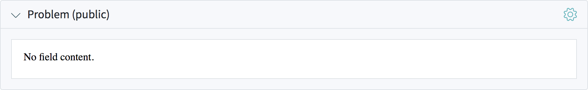Problem Widget
This widget supports Widget Configuration.
- Solution (public) Widget
This widget can be used to describe the solution of the problem.
Solution Widget
This widget supports Widget Configuration.
- Comment (internal) Widget
This widget can be used to add a comment to the article. The comment is not shown in the external interface.
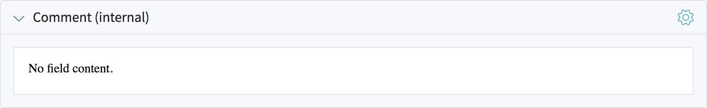Comment Widget
This widget supports Widget Configuration.
- Rating Widget
This widget can be used to rate the knowledge base article.
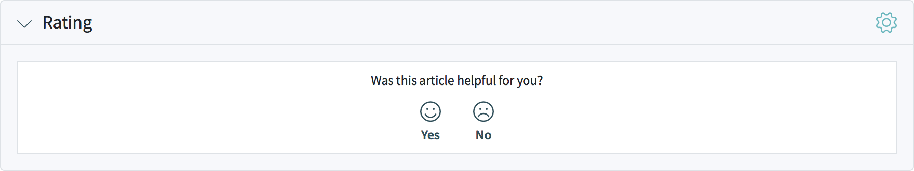Rating Widget
This widget supports Widget Configuration.
- Properties Widget
This widget shows the properties of the knowledge base article. The properties are presented as small cards within the widget.
This widget supports Widget Configuration.
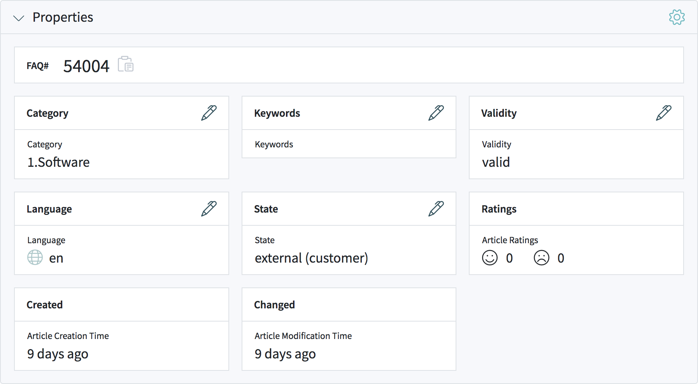Properties Widget
Most of the cards have a pen symbol in the right corner. Clicking this symbol allows to directly edit the property.
Attachments Widget
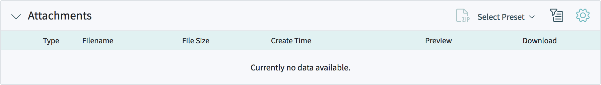Attachments Widget
- Linked Tickets Widget
This widget shows linked tickets.
This widget supports Widget Filter and Widget Configuration.
Knowledge Base Article Detail View Actions¶
- Edit
This knowledge base article action allows to edit the knowledge base article.
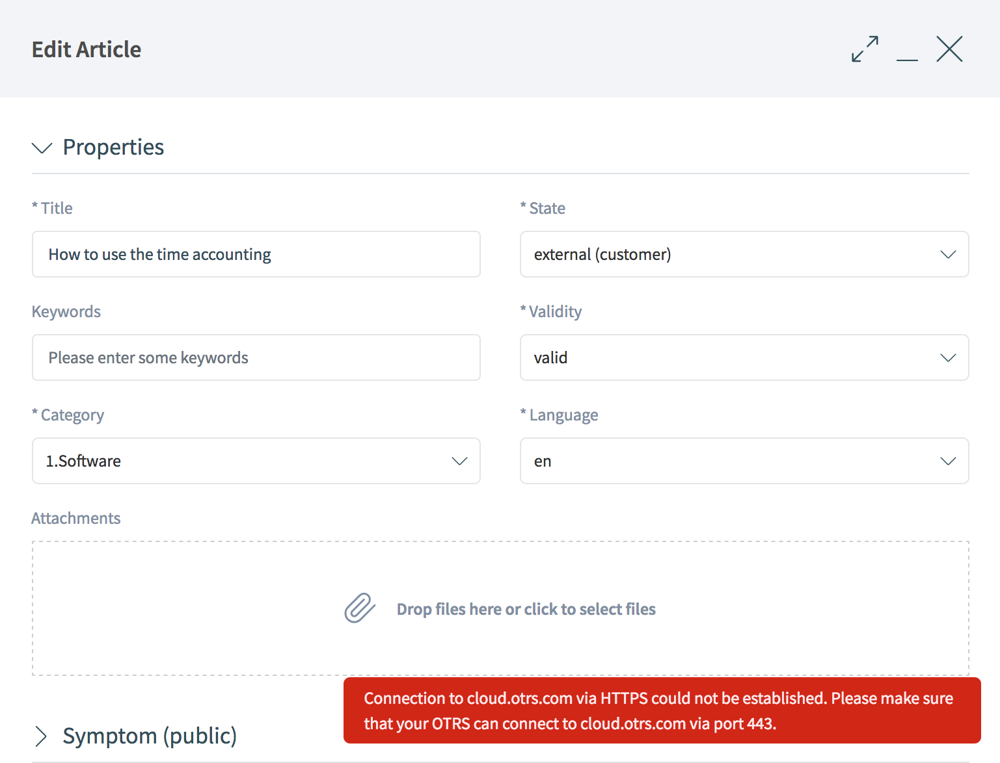Edit Article Widget
- Link
This knowledge base article action allows to link the knowledge base article.
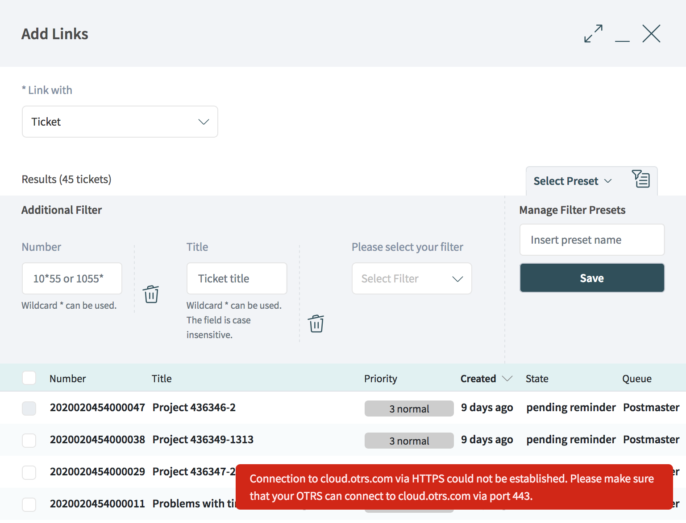Add Links Widget
- Delete
- This knowledge base article action allows to delete the knowledge base article.
- History
- 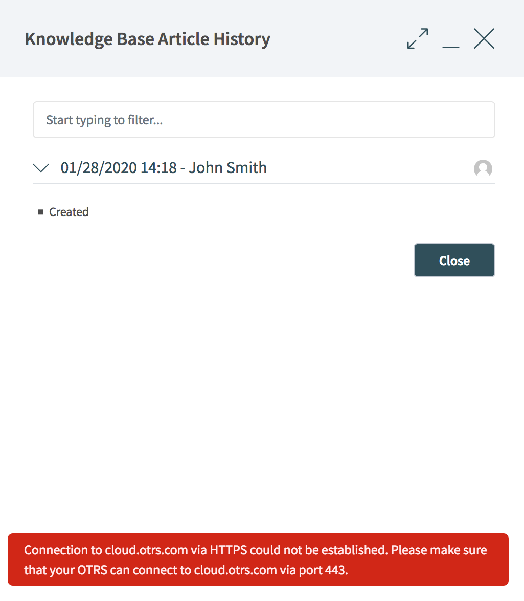
History Widget
- This knowledge base article action allows to print the knowledge base article.
Customer Detail View¶
Customer Detail View Widgets¶
- Customer Information Widget
This widget shows information about the customer presented in a card.

Customer Information Widget
The customer card shows the number of open and closed tickets of the customer. The Action section contains icons to directly edit the customer. The section Social contains links to the social channels of the customer.
- Customer User List Widget

Customer User List Widget
- Reminder Tickets Widget
This widget lists the pending tickets. Pending tickets are set for later work by the agent, and the reminder time is going to expire soon.

Reminder Tickets Widget
This widget supports Widget Filter and Widget Configuration.
- Escalated Tickets Widget
- This widget lists the escalated tickets. Escalated tickets are after the time set in service level agreement, and therefore needs to be worked on them immediately.
This widget supports Widget Filter and Widget Configuration.
- Open Tickets Widget
This widget lists the open tickets. Open tickets represent the current work done by the agent.

Open Tickets Widget
This widget supports Widget Filter and Widget Configuration.
- New Tickets Widget
This widget lists the new tickets. New tickets are created by customer users, and no agent is started to work on them at the moment.

New Tickets Widget
This widget supports Widget Filter and Widget Configuration.
Customer User Detail View¶
Customer User Detail View Widgets¶
- Customer Information Widget
This widget shows information about the customer user presented in a card.
Customer Information Widget
The customer user card shows the number of open and closed tickets of the customer. The Create section contains icons to directly create a new customer user. The Action section contains icons to directly edit the customer user and to login as customer user. The section Social contains links to the social channels of the customer user.
- Customer User List Widget
- TODO
- Reminder Tickets Widget
This widget lists the pending tickets. Pending tickets are set for later work by the agent, and the reminder time is going to expire soon.
Reminder Tickets Widget
This widget supports Widget Filter and Widget Configuration.
- Escalated Tickets Widget
- This widget lists the escalated tickets. Escalated tickets are after the time set in service level agreement, and therefore needs to be worked on them immediately.
- Open Tickets Widget
This widget lists the open tickets. Open tickets represent the current work done by the agent.
Open Tickets Widget
This widget supports Widget Filter and Widget Configuration.
- New Tickets Widget
This widget lists the new tickets. New tickets are created by customer users, and no agent is started to work on them at the moment.
New Tickets Widget
This widget supports Widget Filter and Widget Configuration.
Notification Detail View¶
Notification Detial View